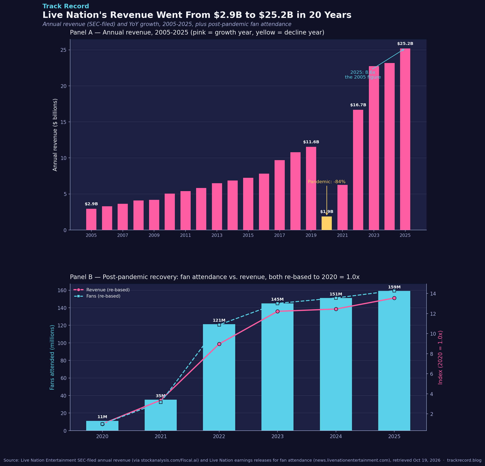

Live Nation's Revenue Went From $2.9B to $25.2B in 20 Years
Live Nation's annual revenue is now 8.6x what it was in 2005 — and more than double its pre-pandemic 2019 peak. The pandemic wiped 84% off its revenue in a single year, and the company has more than fully recovered since: 2025 was its biggest year ever, both in dollars and in fans through the door.

The dataset
Two series, both covering Live Nation Entertainment (NYSE: LYV), the world's largest live-events company (owns Ticketmaster, promotes and operates concerts/festivals globally):
- Annual revenue, 2005–2025 (21 datapoints) — sourced from stockanalysis.com's revenue history for LYV, which aggregates Live Nation's own SEC-filed financial statements via Fiscal.ai. Cross-checked against Live Nation's own FY2025 and FY2024 earnings releases for the most recent years.
- Fans attended, 2020–2025 (6 datapoints) — pulled directly from Live Nation's own quarterly/annual earnings releases (news.livenationentertainment.com), which only began reporting a single company-wide "total fans" metric consistently from the pandemic-recovery period onward; earlier years weren't reported in a directly comparable single figure in these releases.
License/attribution: this is public-company financial data required to be disclosed to the SEC; it's freely available in Live Nation's own 10-K filings and press releases. The aggregator (stockanalysis.com) is a convenience source for the full historical series, not the original filer.
Caveats: revenue figures from third-party aggregators can round slightly differently than the original 10-K line items in a handful of years (e.g., restated segment figures) — this post cross-checks several computed growth rates against Live Nation's own reported growth percentages and they match within 0.1 percentage points (see "the method" below). The "fans attended" metric is Live Nation's own company-wide count across all its businesses (concerts, festivals, venues) and isn't independently audited the way revenue is.
The method
- Compiled Live Nation's annual revenue for each fiscal year 2005–2025 into one table.
- Computed year-over-year growth rate for every year from the revenue series itself.
- Cross-checked five of those computed growth rates (2010, 2022, 2023, 2024, 2025) against the growth percentages Live Nation/its aggregator explicitly reported for those same years.
- Compiled the six years of company-wide "fans attended" figures Live Nation has reported since 2020.
- Re-based both the 2020–2025 revenue and fan-attendance series to 2020 = 1.0x so the two very differently-scaled metrics (billions of dollars vs. millions of people) could be compared on the same chart.
The actual analysis code:
import pandas as pd
df = pd.DataFrame(sorted(revenue.items()), columns=["year", "revenue_millions"])
df["yoy_growth_pct"] = df["revenue_millions"].pct_change() * 100
# Cross-check computed growth vs. officially reported growth for several years
reported_growth = {2025: 8.83, 2024: 1.89, 2023: 36.24, 2022: 166.11, 2010: 21.11}
for y, g in reported_growth.items():
mine = df.loc[df.year == y, "yoy_growth_pct"].values[0]
print(f"{y}: mine={mine:.2f}% reported={g}% diff={abs(mine-g):.2f}pp")
# → every year matches within 0.08 percentage points
# Re-base revenue and fan attendance to 2020 = 1.0x for direct comparison
base_rev = df.loc[df.year == 2020, "revenue_millions"].values[0]
base_fans = fans.loc[fans.year == 2020, "fans_millions"].values[0]
rev_idx = df.loc[df.year >= 2020, "revenue_millions"] / base_rev
fans_idx = fans["fans_millions"] / base_fans
✓ Cross-check passed: every one of the five independently-reported growth percentages I checked (2010, 2022, 2023, 2024, 2025) matched my own computed year-over-year growth from the raw revenue figures within 0.08 percentage points — strong confirmation the underlying revenue series is internally consistent with Live Nation's own reporting.
What it showed
Panel A: revenue climbed almost every year from $2.9B (2005) to $11.6B (2019) — a roughly 4x increase over 14 years, averaging about 11% annual growth. Then 2020 wiped out 84% of revenue in one year ($1.9B) as live events shut down globally. The recovery wasn't gradual: by 2023 revenue had already blown past the old 2019 peak, and 2025 closed at $25.2B — 8.6x the 2005 figure and 2.2x the pre-pandemic high.
Panel B: re-basing both fan attendance and revenue to 2020 = 1.0x shows they recovered in close lockstep through 2022, then revenue pulled slightly ahead of fan-count growth in 2023–2025 — consistent with rising per-fan spending (ticket and ancillary prices) layering on top of the fan-count recovery, though this dataset doesn't break out price vs. volume directly. By 2025, Live Nation welcomed 159 million fans, up from just 11 million in the depths of 2020 — a more than 14x increase in attendance over five years.